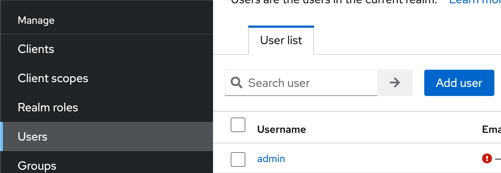
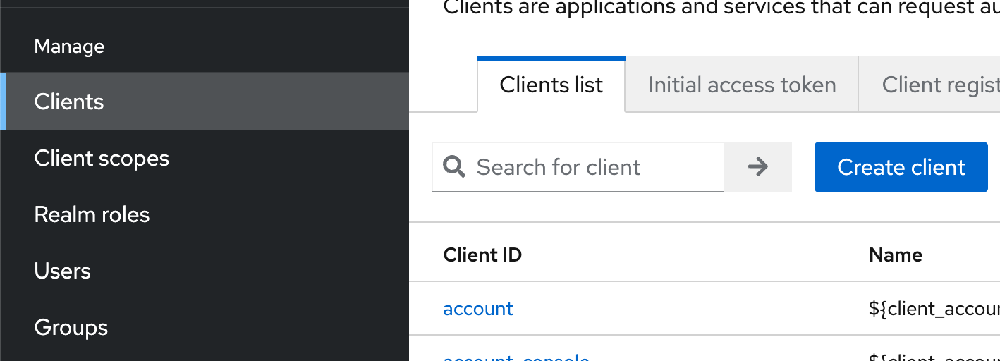
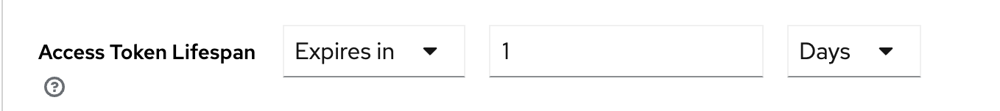

cp ~/Downloads/keycloak*.zip ~/Applications
cd ~/Applications
unzip keycloak*.zip
cp ~/Applications/keycloak-21.0.1O Keycloak-u
Keycloak je open source riešenie pre:
-
jednotné prihlasovanie (single sign on) do viacerých aplikácií, či microservisov
-
správu identít používateľov (identity management) a správu prístupov (access management), sumárne systém typu IAM
-
poskytovateľa identít (identity provider) pre protokol OpenID Connect či SAML
-
autorizačný server (Authorization Server) pre protokol OAuth 2.0
Typické prípady použitia bez Keycloaku
- HTTP Basic
-
do HTTP požiadavky priložíme hlavičku
Authorization, kde uvedieme hashovaný login a heslo, čím realizujeme autorizovaný prístup. - Bežný backend
-
používateľ sa prihlási cez formulár, server odpovie s cookie v hlavičke, a každá ďalšia požiadavka bude obsahovať cookie indikujúcu úspešné prihlásenie
Načo Keycloak?
Keycloak je:
-
databáza používateľov, ich osobných údajov
-
evidencia hesiel či iných credentials, teda autentifikačných možností
-
príslušnosti k skupinám
-
priradenie rolí
-
nástroj na realizáciu prihlasovacieho formulára
-
s unifikovanými protokolmi, ktorým rozumejú rozličné jazyky
Typické prípady použitia s Keycloak-om
-
Používateľ sa prihlási cez prihlasovací formulár v Keycloaku a tým je automaticky autentifikovaný pre náš webový portál.
-
Používateľ pomocou loginu a hesla získa token, teda dôkaz o úspešnom prihlásení a prikladá ho ku každému volaniu REST API
-
Používateľ sa prihlási v SPA (Single Page App) a jeho prihlasovanie sa automaticky propaguje na backendovú aplikáciu.
Plán práce
-
Stiahneme Keycloak, rozbalíme.
-
Spustíme Keycloak na lokálnom stroji.
-
Pridáme vzorových používateľov vrátane loginu a hesla
-
Využijeme flow, teda postupnosť krokov, kde vymeníme login a heslo za token typu JWT.
-
Pozrieme sa, čo je vo vnútri tokenu.
Stiahnutie a spustenie
Na spustenie je potrebná Java aspoň verzie 11, predpokladáme, že je nainštalovaná.
Keycloak stiahneme z domovskej stránky na Keycloak.org.
Rozbalíme ho:
Keycloak spustíme na lokálnom stroji vo vývojárskom režíme:
bin/kc.bat --start-dev
| Keycloak beží na porte 8080. |
Pridanie administrátorskeho konta
Navštívme http://localhost:8080.
Vytvorme administrátorku:
-
Username:
admin -
Password i Password Confirmation:
Igieciehou1Mie
Prihlásme sa do administrátorskej konzoly na adrese http://localhost:8080/admin/.
Realm
Realm je niečo ako projekt, či menný priestor, alebo workspace, či tenant v ktorom možno v rámci inštancie nezávisle udržiavať konfiguračné nastavenia.
Štandardný realm je master.
Nový používateľ
Pridajme používateľa i s heslom.

-
V ľavom paneli zvoľme
Users. -
Pridajme nového používateľa cez tlačidlo Add user.
-
Vyplňme najmenej login, napr
harald. -
Overme, že používateľ je povolený (Enabled), obvykle prepínačom vpravo hore.
-
Na karte Credentials nastavme heslo cez Set Password.
-
Vyplňme heslo a potvrdenie, napr.
Yei8eejaiJeith. -
Zakážme dočasné heslo, inak by si ho používateľ po prvom prihlásení musel zmeniť: Temporary je vypnuté.
-
Klienti a aplikácie
| Client (klient) sú aplikácie či služby, ktoré vyžadujú prihláseného používateľa. |
Príkladom klienta môže byť backendová aplikácia s REST API, ktorá vyžaduje prihláseného používateľa; iným príkladom je aplikácia, ktorá dokáže získavať zabezpečené údaje v mene konkrétneho používateľa.
Pripravme si klienta reprezentujúceho REST API backend.

-
V ľavom paneli zvoľme Client Scopes.
-
Pridajme nového klienta cez tlačidlo Create client.
-
Ponechajme protokol OpenID Connect.
-
Vyplňme identifikátor klienta —
megabank. -
Voliteľne dodajme popis a názov.
-
V bloku Capability Config sa uistime, že máme povolený Standard Flow a Direct access grants.
-
V bloku Login Settings ponechajme všetko prázdne.
Prihlásenie cez flows: ROPC
Keycloak rozumie viacerým prístupom k prihlasovaniu — tzv. flow. Najjednoduchší flow je ROPC (Resource Owner Password Flow), definovaný v štandardne OAuth 2.0, ktorý dokáže vymeniť login a heslo za autentifikačný token reprezentujúci úspešné prihlásenie.
| Tento flow je azda najjednoduchší a slúži pre aplikácie, ktoré len chcú migrovať na OAuth 2.0. Treba absolútne dôverovať aplikácii, ktorá prevezme prihlasovacie údaje, a nechce ich zneužiť. |
S použitím nástroja curl dokážeme získať token:
curl -X POST --location "http://localhost:8080/realms/master/protocol/openid-connect/token" \
-H "Content-Type: application/x-www-form-urlencoded" \
-d "grant_type=password" \ (1)
-d "client_id=megabank" \ (2)
-d "scope=openid" \ (3)
-d "username=harald" \ (4)
-d "password=Yei8eejaiJeith"
| 1 | Používame flow ROPC indikovaný typom grant_type. |
| 2 | Uvedieme identifikátor klienta. |
| 3 | Dodáme špeciálny atribút, ktorý v Keycloaku indikuje použitie protokolu OIDC (OpenID Connect). V ňom vieme získavaať pokročilé informácie o prihlásení cez token. |
| 4 | Dodáme login a heslo. |
Odpoveďou bude JSON s viacerými atribútmi:
{
"access_token":"eyJh....",
"expires_in":60,
...
}Odpoveďou bude token v atribúte access_token.
Tento token reprezentuje informáciu o úspešnom prihlásení, s ktorou teraz vieme pristúpiť k autorizovanému REST API v našej službe, ktorú si potrebujeme vytvoriť.
Overenie tokenu
Celý token vieme zobrať a overiť pomocou keycloakovej služby na endpointe userinfo.
http://localhost:8080/realms/master/protocol/openid-connect/userinfo Authorization: Bearer eyJh....
Výsledkom bude JSON s informáciami o prihlásení.
{
"sub": "0f0d7fe9-9293-4ef4-a476-9e2aba73028c", (1)
"email_verified": false,
"preferred_username": "harald", (2)
"given_name": "",
"family_name": ""
}
| 1 | Identifikátor používateľa v Keycloaku vo formáte UUID. |
| 2 | Ľudsky čitateľný login používateľa. |
Tokeny
Ak používame flow ROPC a požiadame si protokol OIDC, dostaneme token vo formáte JWT.
Ide o digitálne podpísanú nemennú informáciu najmä o:
-
identifikátore používateľa
-
jeho logine
-
klientovi, ktorého sa dotýka
Okrem toho token obsahuje:
-
časovú pečiatku vydania
-
dátum expirácie
-
algoritmus, ktorý sa použil na digitálny podpis
| Tokeny majú obmedzenú platnosť. Každý token je totiž „kľúčom“, ktorým vieme pristúpiť k autorizačnej službe! Tokeny treba chrániť podobne ako heslá. |
Tento token pozostáva z troch zložiek oddelených bodkou, pričom každá je reprezentovaná kódovaním Base64.
ey[___].eyJleH[___]VZGO6-Aa7q_Sjygf21BYrm6bVAXnBGeJrOOCxyTUs9nmZ9wKP64I2O7NaJwPtdAhbeZVlh2MkxqWe9HtxBhgHXSNQ1DRs43ergRKbEpObV
Token vieme zobrať a vložiť buď:
-
do online služby https://jwt.io/
-
prípadne JWT plug-in pre platformu IntelliJ
Po dekódovaní uvidíme tri zložky, každá vo formáte JSON.
-
najprv hlavičku: s algoritmom a typom tokenu
-
na konci digitálny podpis indikujúci neporušiteľnosť a autenticitu tokenu. Token je obvykle podpísaný privátnym kľúčom Keycloaku, a overiť ho môžeme verejným kľúčom.
-
telo: reprezentujúce claims, teda tvrdenia o príslušnom prihlásení.
Príklad tela:
{
"exp": 1679693901, (1)
"iat": 1679693841, (2)
"sub": "0f0d7fe9-9293-4ef4-a476-9e2aba73028c", (3)
"preferred_username": "harald" (4)
}
| 1 | Dátum expirácie tokenu ako unixová časová pečiatka. |
| 2 | Dátum vydania tokenu, tiež ako pečiatka |
| 3 | Subjekt, teda jednoznačný identifikátor používateľa z Keycloaku. |
| 4 | Ľudsky čitateľné meno. |
| Pokusy upravovať token narušujú jeho digitálny podpis! Služba tak vie okamžite zistiť, či sa útočník nepokúša predstierať, že je niekto ný. |
Platnosť tokenov
Štandardný token platí minútu. Ak máme testovacie prostredie a nechceme dokola získavať nové tokeny, môžeme pre konkrétneho klienta predĺžiť platnosť.
V Clients > Megabank na karte Advanced sa posunieme do spodných častí obrazovky. Nájdeme sekciu Access Token Lifespan a nastavíme expiráciu napríklad na 1 deň.

Nastavenia nezabudnime uložiť!
Po získaní nového tokenu uvidíme v atribúte expires_in platnosť jedného dňa.
"expires_in": 36000,
Ako ďalej?
V ďalšom kroku je čas na vlastnú službu, ktorú ochránime autorizáciu s protokolom OAuth 2.0/OIDC, a preukážeme sa JWT tokenom.